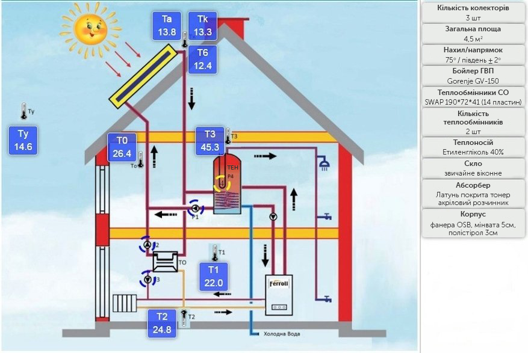
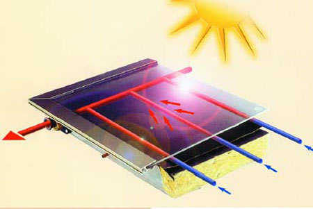

Життя в стилі "ЕКО"

Дедалі ширше застосування в системах приготування гарячої води, нагріву води басейнів та підтримки систем опалення в приватних будинках знаходять альтернативні джерела енергії. Сонячні системи, які раніше сприймалися як екзотика, стають сьогодні обов’язковим елементом інженерної системи сучасного будинку.
У середньому в Україні на 1м² площі за рік потрапляє приблизно 1.000 кВт∙год сонячної енергії. Таку ж енергію можна отримати при спалюванні приблизно 110 м³ природного газу. Цю безкоштовну енергію можна ефективно використати для власних потреб за допомогою сонячних колекторів Vitosol від компанії Viessmann.
Встановлюючи сонячні колектори, Ви отримаєте, насамперед, певну незалежінсть від традиційних джерел енергії, що постійно зростають у ціні – природного газу або рідкого палива. Сонячна енергія – абсолютно безкоштовна!
Встановлюючи сонячні колектори, Ви зекономите використання дорогого природного газу чи рідкого палива і гарантуєте собі зменшення витрат на експлуатацію системи опалення. Сонце не виставляє рахунки за спожиту енергію!
Встановлюючи сонячні колектори, Ви засвідчуєте свою відповідальність перед майбутніми поколіннями. Ви не тільки зекономите традиційні джерела енергії, а і значно зменшите шкідливі викиди в атмосферу при їх спалюванні та викиди парникових газів. Сонячна енергія – абсолютно еклогічно чистий вид енергії! Неважливо, чи Ви почнете з газової конденсаційної техніки, опалювальної системи на деревині або з теплового насоса – вся техніка Viessmann розрахована на комбінацію з сонячними колекторами. Досвід розробки та виробництва сонячних колекторів компанією Viessmann перевищує 30 років. Тож Ви можете покластися на високоякісну надійну техніку майбутнього.